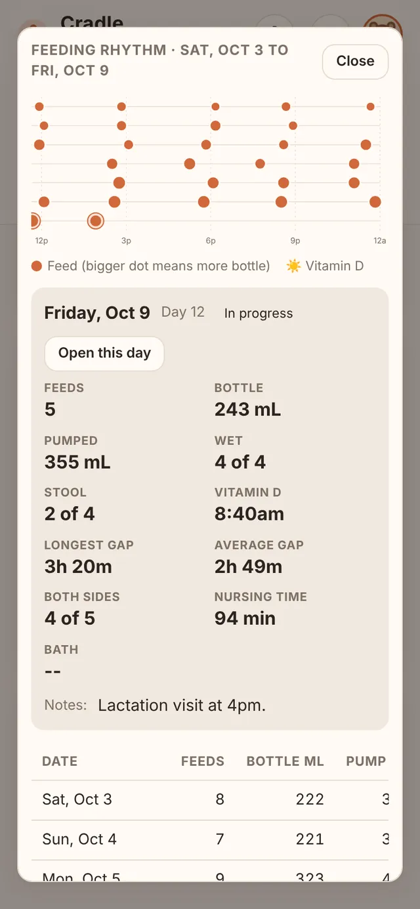
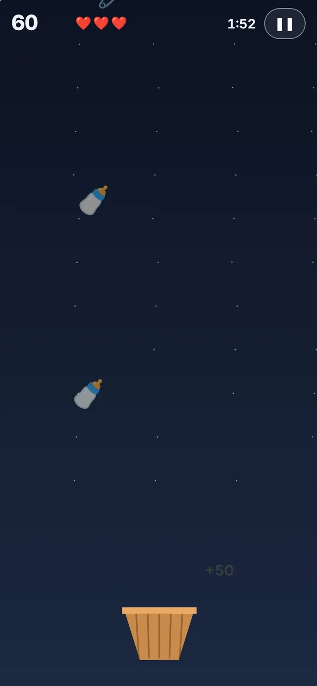
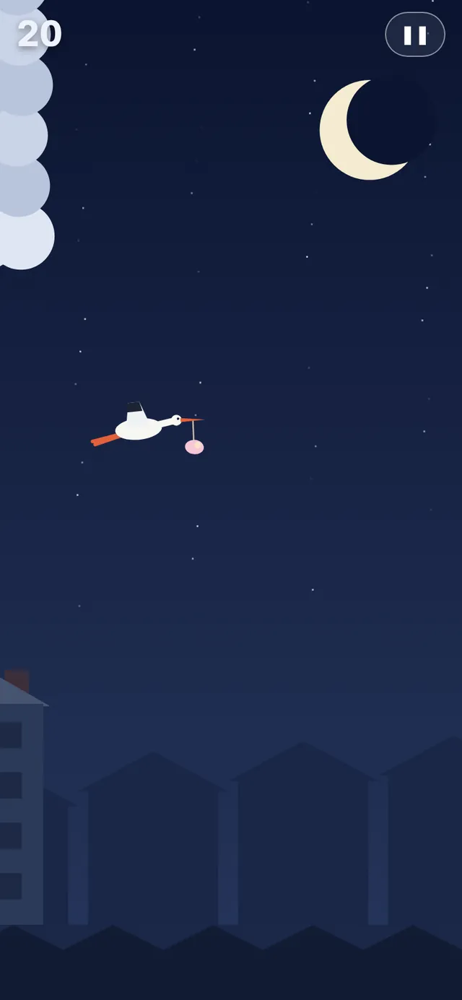
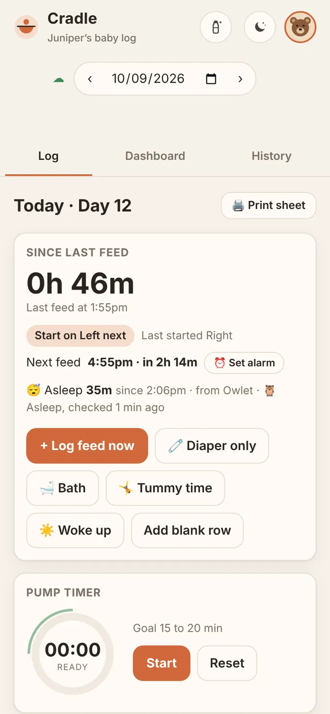
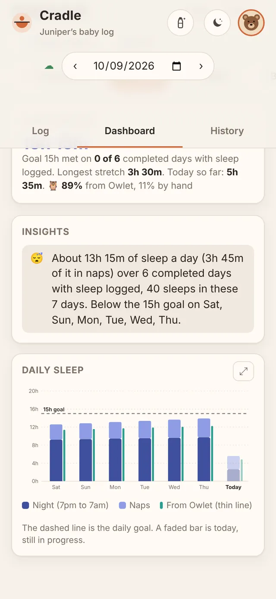

Not medical advice
Cradle is a notebook. Its goals are placeholders, and its totals are simple arithmetic on what you type. Follow your pediatrician or care team, and call them if you're worried about your baby.
Family baby log
Feeds, diapers, pumping, Vitamin D, baths, tummy time, sleep, and weights, logged in a few taps and on every family phone within seconds. With an Owlet Dream Sock, sleep logs itself. Big buttons for 3am, clear trends for the pediatrician, and a few games for the waiting moments.


What's inside
One app for the whole routine, set up for how your family feeds. Turn off breast, bottle, or pumping in Settings if you don't use them, and they disappear everywhere.
Breast with a timer and which side to start on, bottles in mL, and pumping, alone or together. Triple feeding fits on one row.
Wet and stool goals that follow your baby's day of life, a Vitamin D check with streaks, baths, timed tummy time with a daily goal, and optional sleep tracking with naps, night sleep, and the wake window. Have an Owlet Dream Sock? Sleep logs itself.
Pumped milk in the fridge and freezer, oldest first, with CDC limits flagged. Thaw, use as a bottle feed, and print or scan barcode labels.
Visit weights and weighted feeds in grams or lb and oz, charted against birth weight.
A dim screen with huge buttons for one-handed feeds in the dark, in warm, moonlight, or red colors.
7 or 14 days of trends, insights, and a one-page report to bring to appointments.
Everyone gets their own login and picture, the family shares one log, and changes appear on every phone in seconds. Two-step sign-in keeps a stolen password out. Support sends feedback, with a screenshot, straight to whoever runs your Cradle.
When the next feed is due, an in-app alarm, and optional notifications even when Cradle is closed.
Daily Word, Bottle Catch, Stork Flight, and Laundry Day with family high scores, plus 58 achievements and seasonal themes.

Patterns at a glance
Every chart on the Dashboard opens big. Tap a day or a single feed to see everything about it: feeds, bottle and pumped totals, diapers against the goals, Vitamin D, the longest stretch, and nursing time on each side.
The app
Log, Dashboard, and History across the top. At the top right, the bottle opens Night shift and the moon opens Calm. Everything else lives in the profile menu, under your picture.






Night shift
A dim, low-glare screen with buttons big enough for one thumb while you hold a baby with the other arm.
Start feed logs the time and starts the timer in one tap.
Bottle in 5 mL steps, plus wet, stool, and Vitamin D, then Done. It saves as you go.
Three colors. Red is easiest on night vision. The screen stays awake when Cradle is installed.


Calm
Tap the moon button for a slow, soothing screen with the time, how long since the last feed, and when the next one is due. The feed alarm still works while it's open.
Family sharing
Whoever is on duty logs it, and every other phone has it within about 15 seconds. Two people can even edit the same feed: changes to different boxes are combined, and a note says who changed what. Each family's log is walled off from every other family by the database itself. Everyone can add a picture, a photo or a built-in one, and choose who sees it.
K7QM-4XPDA share key. Text it to anyone who should see this log.Start a family. Create an account with no key. Add the baby's name and birth date.
Share the key. Profile, then Family, then Share writes the invite text for you.
They join. Create account, paste the key, and the whole log appears.




Owlet Dream Sock (optional)
Connect an Owlet Dream Sock once and Cradle logs every sleep it sees, on every family phone. Three minutes asleep starts a sleep; five minutes awake, or the sock on its charger, ends it. Sleep you tap in by hand is merged in and never counted twice, and the Dashboard shows how much came from each.
Turn on Sleep. Cradle asks if you have a Dream Sock, or tick 🦉 Dream Sock beside Sleep any time later.
Sign in to Owlet once. Your family must require two-step sign-in first. The password is used to connect and never saved. Cradle keeps Owlet's sign-in, encrypted, in your own Supabase project.
Watch it fill in. Sleeps appear marked “from Owlet”, checked about once a minute. Heart rate and oxygen are never read into Cradle.
Appearance


Under the hood
The whole app is one HTML file with no frameworks, no trackers, and no third-party scripts. The hosted site only runs its own code and only talks to your database. Each phone keeps its own copy and syncs through a free Supabase project that you own.
HTML file for the whole app. No dependencies.
for an entry to reach other phones while Cradle is open.
analytics, ads, or third-party scripts.
SQL scripts set up the database, and both are safe to rerun.
Good to know
Cradle is a notebook. Its goals are placeholders, and its totals are simple arithmetic on what you type. Follow your pediatrician or care team, and call them if you're worried about your baby.
Cradle was built with help from Claude, an AI model by Anthropic, and tested in a simulated setup. It hasn't had an independent security review. Keep backups with Export data.